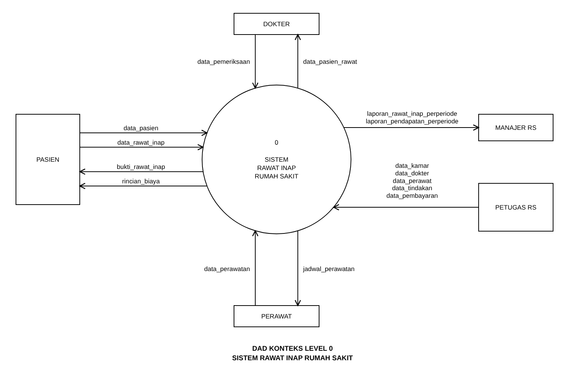
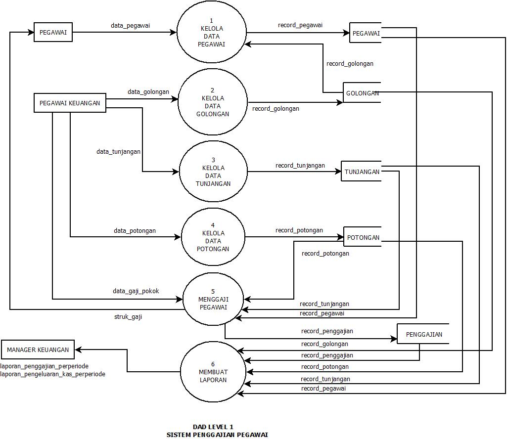

Studi kasus · AnalisisMahasiswa Informatika · Frontend
Ide baik layak punya ruang digital.
Halo, saya Khansa. Saya tertarik merancang dan membangun pengalaman web yang jelas, responsif, dan menyenangkan untuk digunakan.
Terbuka untuk belajar dan kolaborasi
Mencari ide, satu langkah setiap hari.
Ruang proses.Catatan kecil tentang hal-hal yang sedang saya bangun.
✳ Frontend development✳ UI yang intuitif✳ Analisis sistem✳ Belajar sambil berkarya
Tentang saya
Membuat teknologi terasa lebih dekat dengan manusia.
Saya Khansa Mutia Syahida Putri Wijaya, mahasiswa Informatika yang menikmati proses mengubah ide menjadi pengalaman digital. Ketertarikan saya berada di persimpangan antara antarmuka, logika, dan kebutuhan pengguna.
Saat ini saya terus memperkuat fondasi pengembangan web dan analisis sistem melalui proyek serta tugas perkuliahan. Saya percaya hasil yang baik datang dari rasa ingin tahu, komunikasi yang terbuka, dan kemauan untuk mengulang sampai terasa tepat.
Mendalami pengembangan frontend dan praktik membangun web yang responsif.
Mempelajari Informatika melalui pemrograman, analisis, dan perancangan sistem.
Pilihan karya
Belajar paling terasa saat sesuatu dibuat.
Beberapa studi kasus akademik dan eksplorasi web yang menunjukkan cara saya berpikir serta membangun.

Studi kasus · AnalisisPORTOFOLIO · 2026Ide baik layak
punya ruang digital.
punya ruang digital.
Keahlian & minat
Fondasi yang terus saya kembangkan.
Daftar ini menggambarkan area belajar dan eksplorasi saya saat ini, bukan klaim tingkat kemahiran profesional.
01HTML & CSSStruktur · Layout · Responsif
02JavaScriptInteraksi · Dasar pemrograman
03UI / UXAlur · Hierarki · Kejelasan
04Analisis sistemProses · Diagram · Dokumentasi
Punya ide menarik?
Obrolan baik bisa jadi awal sesuatu.
Saya terbuka untuk pertanyaan, kesempatan belajar, dan kolaborasi. Kirim pesan singkat lewat formulir ini.
Kembali ke atas